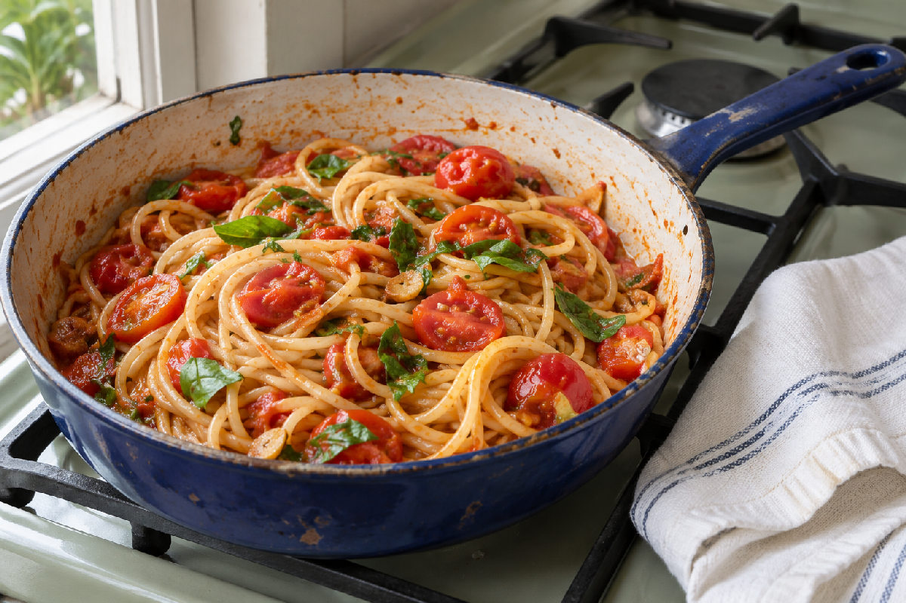

Featured recipe
Tomato & basil
spaghetti.
A glossy tangle of spaghetti with burst tomatoes, soft garlic and torn basil.

Missing ingredients? Open a recipe and tap Add missing ingredients to my list. Quick Plates skips the main ingredients already in My kitchen. Tap View shopping list to see what you need for your meals. From there, tap Copy ingredients to buy and choose a supermarket.
A glossy tangle of spaghetti with burst tomatoes, soft garlic and torn basil.
